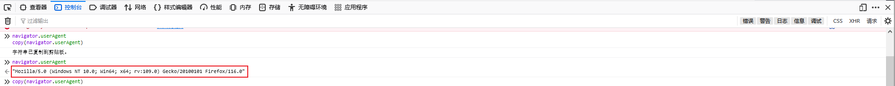
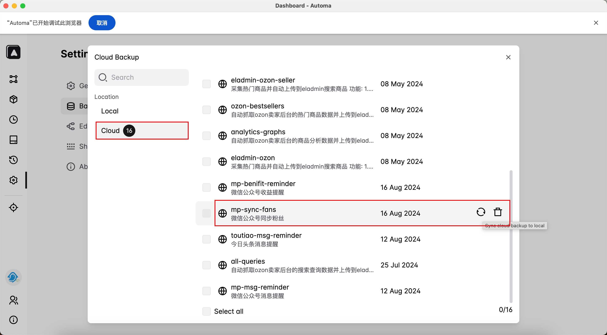

1. JavaScript code获取操作系统

致读者: 点击上方 “雪之梦技术驿站” → 点击右上角“ ... ”→ 点选“设为星标★ ” 加上星标，就不会找不到我啦！
1.1. 前提
在咱们日常使用的手机或者电脑上，每个设备和系统都有自己的“身份证”，这个“身份证”就是navigator.userAgent。
简单来说，它就像是浏览器在告诉网站：“嘿，我是XX浏览器，运行在XX操作系统上”。
通过这个信息，网站就可以知道你是用什么设备、什么系统来访问的，然后给你提供最适合你的内容或功能。
Windows 电脑系统信息

Mac 电脑系统信息
下面,让我们看一下在不同的浏览器环境中,上述两种电脑操作系统分别有什么样的用户代理navigator.userAgent.
选择这两款浏览器是因为自动化浏览器插件
Automa支持这两款浏览器,其他浏览器其他操作系统通通都不是我所关心的事情,哈哈哈!
1.2. 实测
1.2.1. Chrome 谷歌浏览器
Windows

Mozilla/5.0 (Windows NT 10.0; Win64; x64) AppleWebKit/537.36 (KHTML, like Gecko) Chrome/127.0.0.0 Safari/537.36
Mac
Mozilla/5.0 (Macintosh; Intel Mac OS X 10_15_7) AppleWebKit/537.36 (KHTML, like Gecko) Chrome/127.0.0.0 Safari/537.36
经过文本差异比较工具,Chrome 谷歌浏览器可以看出来Windows和Mac客户端浏览器环境下,用户代理(Windows NT 10.0; Win64; x64)部分和(Macintosh; Intel Mac OS X 10_15_7)不同.
1.2.2. Firefox 火狐浏览器
Windows

Mozilla/5.0 (Windows NT 10.0; Win64; x64; rv:109.0) Gecko/20100101 Firefox/116.0
Mac
Mozilla/5.0 (Macintosh; Intel Mac OS X 10.15; rv:109.0) Gecko/20100101 Firefox/116.0
同样地,文本差异比较工具能够看到Firefox 火狐浏览器,用户代理(Windows NT 10.0; Win64; x64; rv:109.0)部分和(Macintosh; Intel Mac OS X 10.15; rv:109.0)不同.
因此,在浏览器环境中通过js判断用户代理,可以推测操作系统是Windows还是Mac,这是可行的方案.
// Windows-Chrome
Mozilla/5.0 (Windows NT 10.0; Win64; x64) AppleWebKit/537.36 (KHTML, like Gecko) Chrome/127.0.0.0 Safari/537.36
// Windows-Firefox
Mozilla/5.0 (Windows NT 10.0; Win64; x64; rv:109.0) Gecko/20100101 Firefox/116.0
// Mac-Chrome
Mozilla/5.0 (Macintosh; Intel Mac OS X 10_15_7) AppleWebKit/537.36 (KHTML, like Gecko) Chrome/127.0.0.0 Safari/537.36
// Mac-Firefox
Mozilla/5.0 (Macintosh; Intel Mac OS X 10.15; rv:109.0) Gecko/20100101 Firefox/116.0
所以,经过分析可知,可以通过判断navigator.userAgent是否包含某些特征值来区分操作系统,可以实现如下代码:
function getOperatingSystem() {
var userAgent = navigator.userAgent || navigator.vendor || window.opera;
// Windows
if (/windows/i.test(userAgent)) {
return "Windows";
}
// MacOS
if (/macintosh|mac os x/i.test(userAgent)) {
return "Mac";
}
// Linux
if (/linux/i.test(userAgent)) {
return "Linux";
}
// 其他
return "Unknown OS";
}
console.log(getOperatingSystem());
1.3. 应用
根据操作系统不同,设置不同的下载路径,从而实现不同操作系统同步时不再需要手动调整配置,一键启动.
简单举例说明一下实际使用起来是多大效果的提升,原来更新配置时经常性需要重新修改download下载路径.
现在可以根据自动化插件运行的浏览器环境而判断出操作系统,就可以不用显示声明下载路径等差异化配置,不用担心同步变更问题.
{
"download": "C:/Users/Administrator/Downloads/",
"download-mac": "/Users/snowdreams1006/Downloads/",
"download-win": "C:/Users/Administrator/Downloads/"
}
简单的升级改造实现了自动化机器人更进一步,得益于js脚本判断操作系统环境,解放了双手和重复的脑力输出.
例如Windows编写好插件先上传到云端:
然后,在Mac电脑登录相同账号,从云端同步到本地,这样就可以保持最新代码逻辑,不用额外更改路径问题了!

1.4. 总结
本文主要是在浏览器环境下通过编写自动化插件遇到的实际问题中寻找更为简单的解决方案,虽然客户端浏览器不像服务器端那样很简单的获取操作系统信息.
但是,经过实际测试发现,原来用户代理navigator.userAgent就能够简单推断出操作系统信息,从而可以根据不同的电脑应用不同的逻辑.
function getOperatingSystem() {
var userAgent = navigator.userAgent || navigator.vendor || window.opera;
// Windows
if (/windows/i.test(userAgent)) {
return "Windows";
}
// MacOS
if (/macintosh|mac os x/i.test(userAgent)) {
return "Mac";
}
// Linux
if (/linux/i.test(userAgent)) {
return "Linux";
}
// 其他
return "Unknown OS";
}
没想到走到最后,还是自动化操作机器人比较靠谱,藏着掖着的api权限接口折腾人,真不如所见即所得的爬虫技术,想要获取公开数据还是很方便的,哇塞得很!

1.5. 往期精彩文章
- 恨不相逢未嫁时的那么些电脑软件
- 如果能重来我会这么配置开发环境
- 平生不识Charles,网络分析也惘然
- 如今还值得开发微信公众号开发吗
- 看我如何玩转测试微信公众号开发
- 又见Gitbook却卡在了安装这一步
- Gitbook插件开发又被npm绊倒了
1.6. 欢迎扫码关注

欢迎扫码关注,私信回复『加群』一起交流技术
作者: 雪之梦技术驿站
来源: 雪之梦技术驿站
本文原创发布于「雪之梦技术驿站」,转载请注明出处,谢谢合作!